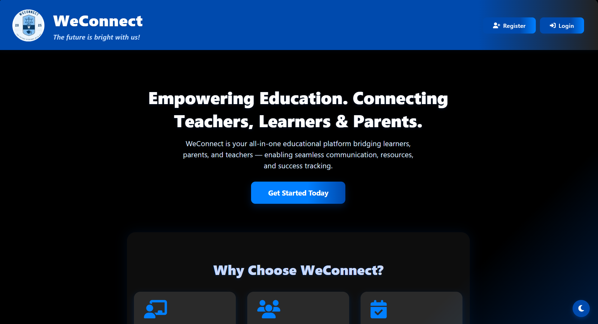
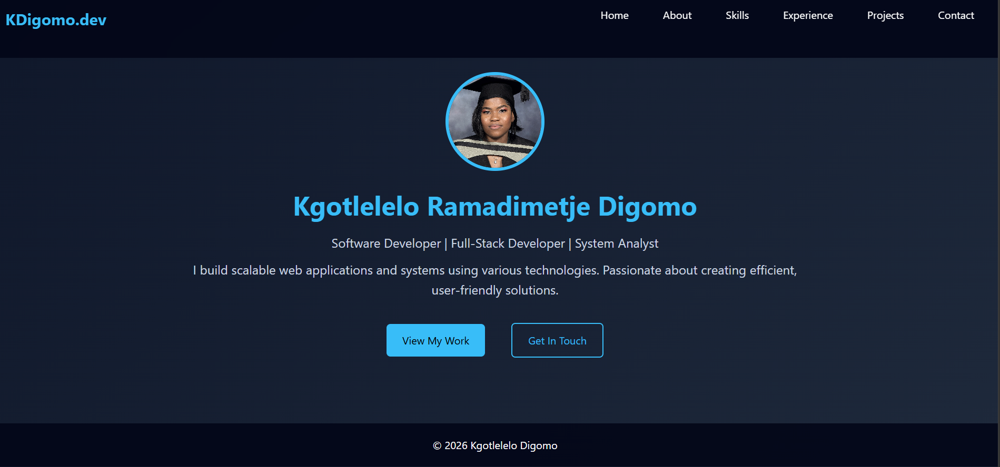
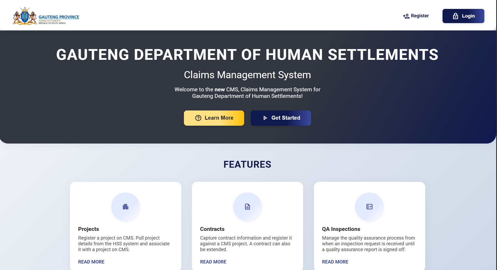

A selection of the systems and experiences I've built while developing practical, end-to-end software solutions.

Designed and built a complete communication platform with secure database structures, seamless user interaction, and responsive system dashboards for better team connectivity.

Created a portfolio website that highlights my experience, skills, and projects. The site is optimized for modern presentation and easy navigation.

Developed a claims management solution with a focus on usability, process flow, and feature enhancements to help users manage claims efficiently and accurately.